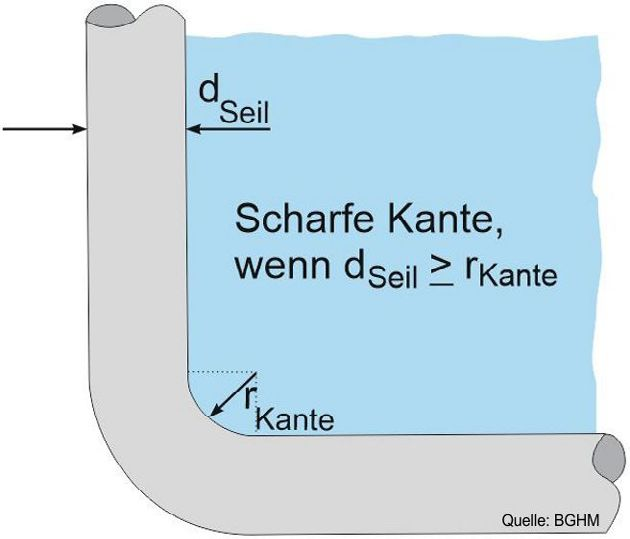

Bei der Verwendung von Lastaufnahme- und Anschlagmitteln sind unbenutzte Lasthaken hochzuhängen, um zum Beispiel die Gefahr des Unterhakens zu vermeiden.
Für den Transport von Lasten, bei denen durch Beschädigung Stoffe freigesetzt werden können, von denen eine besondere Gefahr ausgeht, dürfen nur Lastaufnahme- und Anschlagmittel eingesetzt werden, die keine Beschädigung der Verpackung beim Aufnehmen, Transportieren oder Absetzen verursachen.
Das wird beim Transport von Gasflaschen, Behältern oder Fässern mit leicht brennbarem, ätzendem oder giftigem Inhalt erreicht, indem zum Beispiel geeignete Transportgestelle verwendet werden.
Gefährliche Güter, deren Verpackung beschädigt ist, dürfen nur mit Lastaufnahmemitteln aufgenommen werden, die ein Auslaufen und Ausfließen verhindern.
Gefährliche Güter sind Stoffe und Gegenstände, von denen bei Unfällen oder bei unsachgemäßer Behandlung während des Transports Gefahren für Menschen, Tiere oder Umwelt ausgehen können. Gefährliche Güter sind zum Beispiel an ihrer Kennzeichnung (Piktogramm) nach dem Globalen Harmonisierten System gemäß EG CLP-Verordnung oder nach den Regeln für den Gefahrguttransport zu erkennen.
Mit kraftschlüssig wirkenden Lastaufnahmemitteln (die Last wird ausschließlich durch Magnet-, Reib- oder Saugkraft gehalten) dürfen gefährliche Güter nicht aufgenommen werden.
Unternehmerinnen und Unternehmer müssen sicherstellen, dass die Belastung der ausgewiesenen bauartgeprüften Anschlagpunkte deren Tragfähigkeit nicht überschreitet.
Die Einbau- und Verwendungsanleitung des Herstellers ist zu beachten.
Fertigteile dürfen nur an den vom Hersteller vorgesehenen und unverlierbar gekennzeichneten Anschlagpunkten und in der vom Hersteller vorgesehenen Art und Weise angeschlagen werden.
Transportanker für den Transport von Betonfertigteilen dürfen nur einmalig in der Transportkette verwendet werden. Die Transportkette beginnt mit der Fertigstellung der Betonfertigteile, umfasst den Transport über Verkehrsträger, die Zwischenlagerung am Einbauort und den Einbau des Betonfertigteils. Dabei darf die vom Hersteller des Betonfertigteils angegebene Anzahl von Hebevorgängen nicht überschritten werden. In der Regel sind drei bis vier Hebevorgänge notwendig. Die Zwischenlagerung der Betonfertigteile darf nicht für unbegrenzte Dauer erfolgen, wenn die Transportanker schädigenden Einflüssen ausgesetzt sind.
Bei der Verwendung von Transportankersystemen sind besonders folgende Punkte zu beachten:
Lastaufnahme- und Anschlagmittel dürfen nur so verwendet werden, dass Schäden, die zu einer Beeinträchtigung der Tragfähigkeit führen können, vermieden sind.
Folgende Punkte sind besonders zu beachten:
Kanten gelten als scharf, wenn der Kantenradius der Last kleiner ist als

Abb. 6 Scharfe Kante
Durch die Umlenkung von Seilen, Ketten oder Hebebändern an scharfen Kanten der Last ergibt sich eine unzulässige Verminderung der Tragfähigkeit. Außerdem können an Seilen und Hebebändern durch scharfe Kanten Schäden verursacht werden. Durch die Verwendung von Kantenschützern kann eine ausreichende Rundung der Kante erreicht werden.
Zusätzlich gilt für Anschlagketten:
Auf die Verwendung von Kantenschützern kann in der Regel verzichtet werden, wenn die Kette nur bis zu 80 % der zulässigen Tragfähigkeit belastet oder eine Kette der nächsthöheren Nenndicke verwendet wird.
Abweichende Angaben zum Umgang mit Anschlagmitteln bei scharfen Kanten in der Betriebsanleitung des Herstellers sind zu beachten.
Das Verbot bezieht sich auch auf das sogenannte Knebeln.
Das Verbot bezieht sich bei Chemiefaserhebebändern sowohl auf das gewebte als auch auf das gelegte Hebeband (Rundschlinge); siehe DIN EN 1492 "Textile Anschlagmittel Sicherheit Teil 1 und 2". Durch Knoten kann die Tragfähigkeit je nach Art des Knotens unter Umständen erheblich herabgesetzt werden.
Wird das Seil etwas verdreht, können sich Buchten oder Schleifen bilden. Wird das Seil ausgezogen, bevor die Buchten oder Schleifen beseitigt wurden, kann es sich unter dem Seilzug zu Kinken (auch Klanken genannt) zusammenziehen.
Das Verbot soll Beschädigungen der Bänder verhindern. Es betrifft auch das Querziehen von Bändern.
Quersteif können Bänder mit Festbeschichtung sein.
Siehe auch DGUV Information 209-086 "Stückverzinken".
Lastaufnahme- und Anschlagmittel müssen so abgestellt und aufbewahrt werden, dass sie nicht umkippen, herabfallen oder abgleiten können.
Das wird zum Beispiel bei C-Haken erreicht, indem sie in besonderen Halteeinrichtungen abgestellt werden.
Es ist zum Beispiel zweckmäßig, Anschlagketten und Anschlagseile in Gestellen hängend aufzubewahren.
Lastaufnahme- und Anschlagmittel müssen vor Witterungseinflüssen und aggressiven Stoffen geschützt gelagert werden, wenn dadurch die Sicherheit beeinträchtigt werden kann.
Aggressive Stoffe sind zum Beispiel Chlor, Laugen, Säuren, Lösungsmittel, Streusalz. Witterungseinflüsse sind zum Beispiel UV-Strahlung, Temperatur oder Feuchtigkeit.